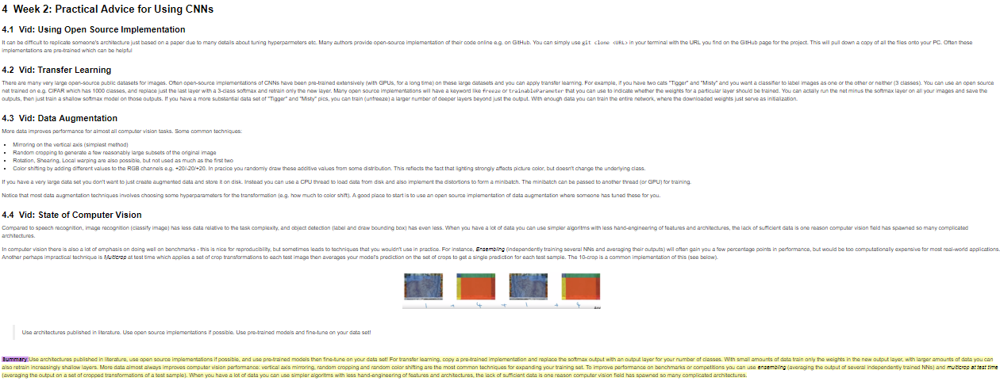

My thoughts (and tips) on the Coursera 5-course Deep Learning Specialization.¶
I recently completed the Deep Learning specialization (a 5-course sequence) on the Coursera platform which was developed by deeplearning.ai with Andrew Ng. I had an overall very positive experience with it, and felt like it was well worth the cost to have Andrew Ng personally curate, organize and explain the most important ideas in the field. My course notes and some annotated code from the homeworks are available in this repo.
My background going into the course was that I had taken the Stanford University Machine Learning course on Coursera, and then actually used some machine learning on a handful of personal projects as well as in a one-year, part-time data scientist role. I also had a strong quantitative and python programming background (including lots of the python ecosystem for data science, but not tensorflow or keras).
TL;DR¶
- Well worth the money; it's like paying Andrew Ng $50 a month to personally curate all the DL knowledge for you.
- Homeworks spoon-feed you code; expect to append your own project(s) to the specialization to really practice your implementation skills.
- Keep a course notebook; be diligent about it, force yourself to be concise, add frequent summary sections where you review the content.
- Invest some time in working through a good external resource for learning
tensorflowandkerasand you will get much more from the homeworks in the later courses. - Don't forget to download your full jupyter workspace for each class if you want to be able to access and run your homework notebooks locally after your subscription is over!
My Timeline¶
I worked through the specialization in about 3.5 weeks working on it around 30 hours per week, which meant I only needed to subscribe to the specialization for a single month ($50 total). Each course is organized by week, and on a full day of work I could go through one week's lecture content and the weekly quiz in the morning and the corresponding homework(s) in the afternoon. Because I find that Andrew Ng speaks a bit slowly and because I have a solid math and programming background, I tended to watch the lectures on 1.75x speed (you can work up to this over the course of a couple videos). However I also paused the lectures a lot to take notes and review ideas, so on average I was spending more time on each week's content than the estimated amounts listed on the course websites.
My Approach¶
For each course I created a dedicated jupyter notebook for course notes, organized by week and weekly sub-topics (these notebooks are available on github here). I would pause throughout each lecture video to add concise notes to my notebook, including screen captures of the most important slides. I often had the experience of beginning to type up some notes, only to realize there was some gap in my understanding which prompted me to skip back in the video to clarify; without taking notes I wouldn't even have been aware of my own misunderstandings. Whenever it felt like we were moving into a new topic I would add a summary section to the notebook where I would read back through my notes and try to summarize the content as concisely as possible. I highly recommend this approach for these reasons:
- The notes are extremely helpful for both the quiz and homeworks.
- Concise notes give me a very easy way to refer back to ideas (and review important slides and figures) after the course is over.
- Typing up notes as you go solidifies your learning and highlights any gaps in your understanding.
- Typing up the summary section gives you a built in review of the content to help solidify the ideas.
Below is a screen cap of an example section from my CNN course notebook; the short summary section is in purple and yellow highlighting at the bottom.

The homeworks are in the form of jupyter notebooks served out from a remote server, which have a submission button for grading. At the end of each course I looked back through the homework notebooks and pulled out any functions and code snippets that I wanted to be able to reference quickly, and also typed up summaries of how the code was organized in the homeworks, as I found this very helpful for solidifying the ideas. Many of the homework notebooks are behind a paywall, so I also made sure to download the full jupyter workspace for the course (not just the homeworks, but data and helper scripts also) so I could rerun the homework locally after my subscription ended. Instructions for that are here.
My Thoughts¶
Mathematical Difficulty. Similar to the Stanford University course, Andrew Ng does a great job simplifying (or downright ignoring) the more detailed or difficult mathematical pieces of the content. This lets you develop some mastery of broad ideas and guiding principles without getting too bogged down; if you want the math afterwards just pick up any textbook. All the mathematical notation conventions for referring to different components of the neural networks can be a bit overwhelming, so make sure to review them often or make yourself a cheat sheet as needed.
Programming Difficulty. The programming assignments very much spoon-feed you the code. But they are still helpful in demonstrating not just the sematics of implementing various things, but also how best to functionalize/organize various higher-level tasks like training and evaluating a model. If you are fluent with general python programming and numpy you will find many of the programming assignments very easy. One area that is VERY lacking is a solid introduction to tensorflow and keras, and it would definitely be worthwhile to spend a day going through an external resource for this. The mechanics of both of these are a bit counterintuitive / nontrivial, and once the specialization switches into using them for homework (at the end of the second course) they assume a certain amount of fluency. I often had the experience of being able to complete a homework because of the level of spoon-feeding, but not really feeling like I understood what my TF or keras code was doing.
Preparation for DL Projects. Because the homeworks do not really give you a good grasp of tensorflow or keras and spoon feed you so much, you really are not in a position to confidently fire up your ->insert favorite python front end<- and implement a DL project after completing this specialization. I would plan on adding a self-directed project (kaggle competition, whatever) to the end of the specialization to round out your actual DL implementation skills. For instance I just joined a Kaggle competition for disease classification from retina images, where I'll use CNNs.
Lecture Quality. You can't beat Andrew Ng for giving concise, intuitive explanations of concepts in ML. I had basically zero exposure to DL prior o the specialization, but I do feel like the specialization touched on all the common DL "buzzwords" I had previously encountered. The editing in many of the videos (especially in the last two courses) leaves something to be desired, but I didn't think this really detracted from the content. I think there is a lot to be said for Andrew's approach of hand-drawing figures/diagrams/pictures on the fly, but I sometimes wished he would have followed this up with a slide with a cleaner version of the figure.
Breadth vs. Depth. Hands down this specialization gives you breadth over depth; assuming you master the material, you will have a general idea of the approach for the large majority of influential DL architectures and use cases. There is no serious depth on any one topic, but there is sufficient coverage that you are well prepared to go deeper (hello, InceptionNet) on your own.
Technical Bugs. Expect to deal with a few headaches around the homework notebook technology (you are missing files in your workspace on the server, the grading process is timing out on your notebook submission, etc.). Annoyingly, the homework notebook stuff is provided not by Coursera but by an unspecified third party, so Coursera will refuse to help you troubleshoot any issues. The only way to deal with these bugs is exhaustive search in the course forums for threads dealing with similar issues. More than once I spent upwards of an hour trying to solve an issue, which was pretty frustrating.
Worth the Money? In my opinion, definitely. It is certainly true that all of the content and ideas in the course are freely available online in the form of blog posts, articles, stack exchange threads, github repos etc. But like Linux, that content is only free if your time is worth nothing :) You should think of the subscription fee as paying an absurdly low price ($50 / month) to have Andrew Ng personally find, curate and organize all this material (and then ELIF it to you).